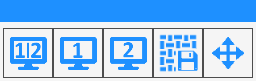
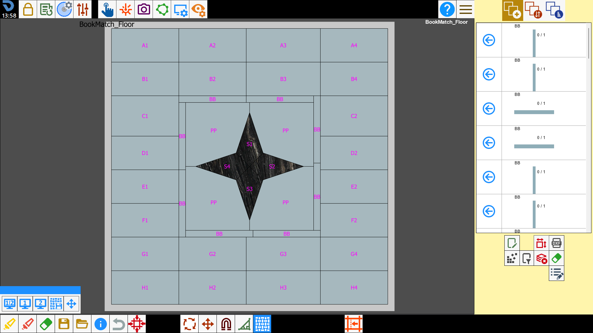
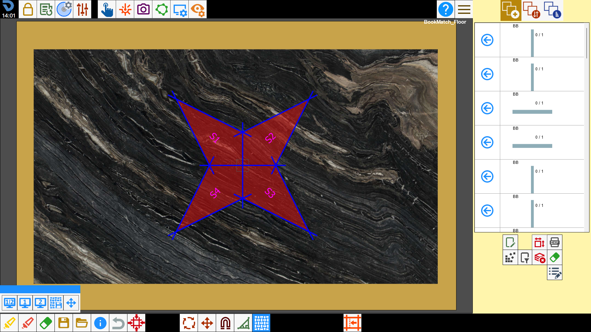
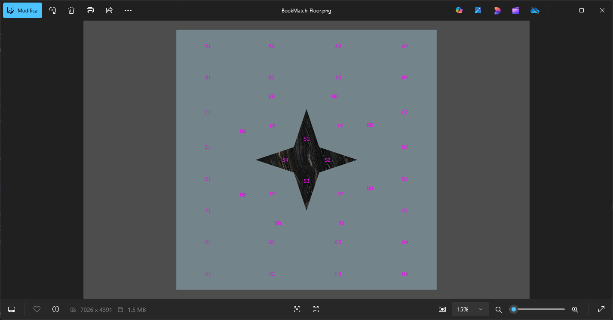
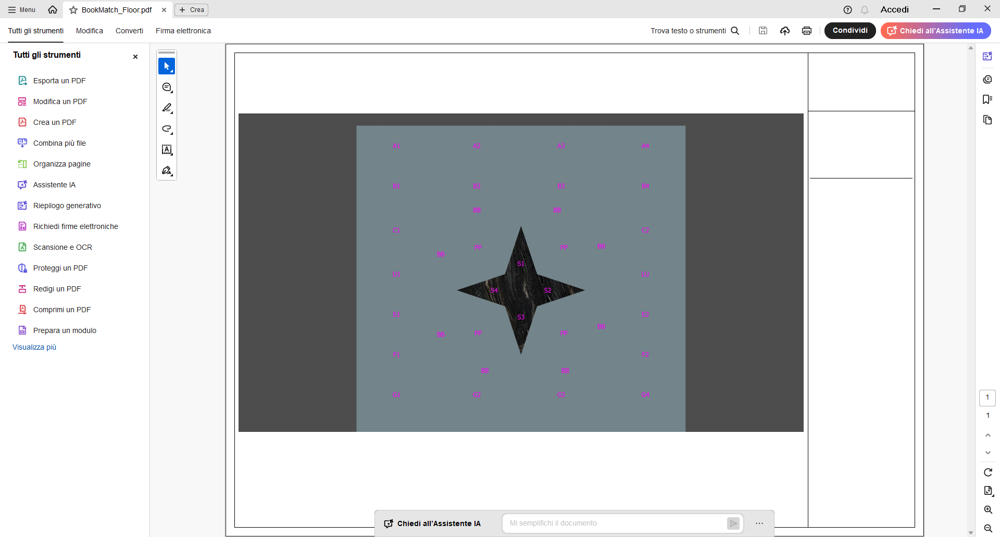
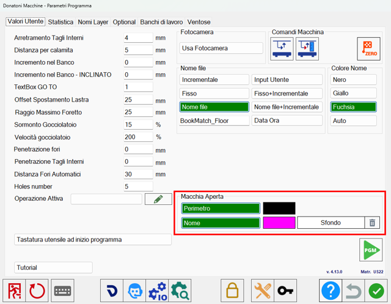
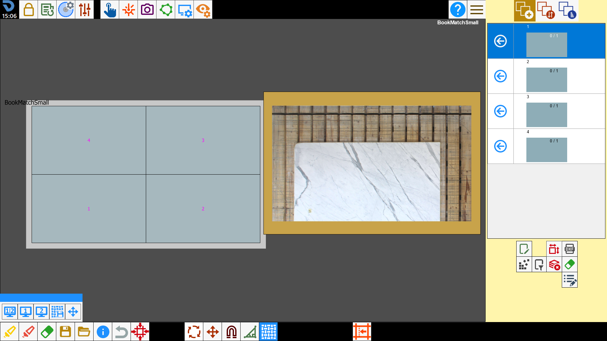
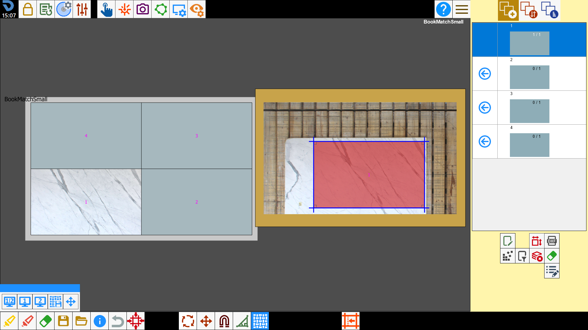

Through the Easy Match functionality it is possible to see, in real time, the background that will assume the pieces in the original position in which they were designed, moving them on the workbench above a slab.
/0.00.png)
Buttons
After having pressed the button, the following panel opens:

Side Viewing | |
/1.3-20250623-092752.png) | View preview |
/1.4-20250623-092845.png) | Bench viewing |
Saving preview | |
/1.6-20250623-093138.png) | Edit preview |
View preview
Allows to move the pieces clicking inside the perimeter of the piece itself, in this way it will be possible to position the piece in the desired position with greater precision.

In the preview are visible all pieces coming from the imported file in the exact position in which they were designed.
The preview size corresponds in scale 1:1 with the size of the designed pieces.
The pieces added on the work bench assume the color of the slab, while those still to be added have an uniform background.
From the preview it is possible:
Add a piece on the working area clicking inside the area that you want to work.
Move a piece that is located on the work bench.
Select a piece on the work bench by clicking inside the piece.
Delete a piece from the preview selecting the gum present under the piece list and then selecting the piece on the preview that you want to delete. In this case the piece will be deleted also from the work area and from the piece list.
Bench viewing
Classic view of the Parametrix work bench. Allows to move the pieces on the work bench exploiting the whole screen.

Adjacent View
It allows to viewing on the same screen both the project preview and the bench.
/0.03.png)
Saving preview
Allows to save the preview of the processing in progress.
The following screen opens:
/image-20250623-094436.png)
It is requested to choose the name of the preview, if save it as image or pdf, where you want to save it and its resolution.
For resolution you can choose between auto (automatic resolution), low, medium, high, ultra and custom (the operator chooses the precise resolution).
Once confirmed it will open automatically the photo or the PDF of the preview.


Modify preview
In this screen you can arrange at will the pieces that compose the preview.
All the changes that are then made are also visible with the other viewings.
/image-20250623-095011.png)
In the top bar you can find the following buttons.
/2.02.png) | Move pieces |
/2.03.png) | Move view |
Preview personalization
Inside the parameters panel of the program, in the user values tab, it is possible to change the colors of some elements of the project preview.

Perimeter | Allows to show/hide the perimeter of pieces inside the preview. |
Name | Allows to show/hide the name of the pieces inside the preview. |
Background | Allows to set the color of the preview background. |
/4.01-20251008-084153.png) | Remove background |
Work Flow
To work using Easy Match, is necessary import in Parametrix the project from a DXF file.
The program will show a preview of the open macchia relative to the pieces present in the file.

After taking a photo of the workbench, you can proceed with inserting the pieces to cut on the slab.
To do it is possible to utilize the classic procedure from the piece list or press inside the perimeter of one of the pieces shown in preview.
By dragging the piece from the preview, this will move also on the slab, useful to make coincide the veins between the various pieces.
You can also do the contrary, that is drag the piece from the slab and see from the preview if the grain coincide or less according where is moved.

At this point proceed with the standard procedure for processing: create the ISO program and cut the slab.
Once finished, press the button to move to the next working.
In the preview, the progress of the project progress state will remain saved.
Proceed with the acquisition of the photo of a new slab and the insertion of pieces inside the perimeter.
/3.02.png)
Continue in this way until project completion.